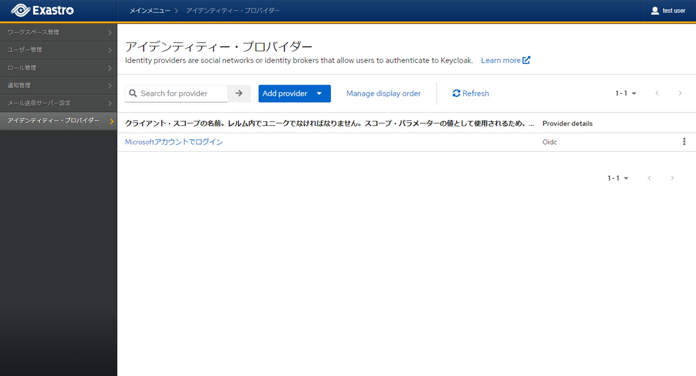
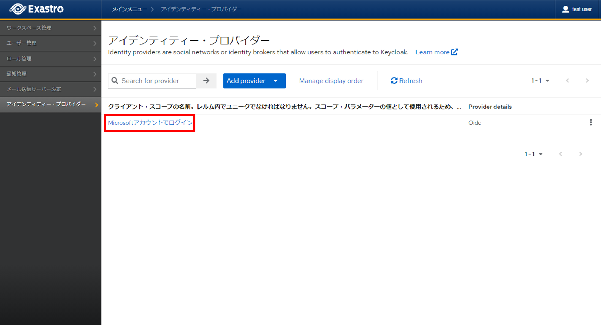
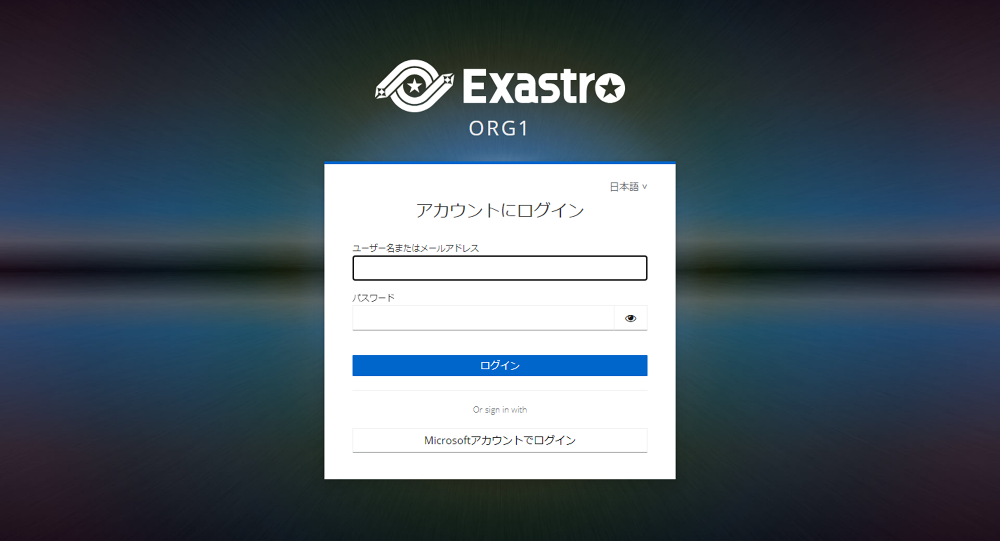

9. IdP設定¶
9.1. はじめに¶
本書では、Exastro Suite における アイデンティティー・プロバイダー(以降IdP)を利用する手順について説明します。
IdPを使用するにあたっては、オーガナイゼーション管理者が使用する認証サービスごとの設定が必要となりますが、
本説明においては、Microsoft EntraIDを利用した場合の例として記載しています。
9.2. 利用条件¶
9.2.1. システム条件¶
Exastro システムのアプリケーションバージョンは、以下の通りです。
アプリケーション
|
バージョン
|
|---|---|
Exastro IT Automation
|
2.4.0以降
|
Exastro Platform
|
1.8.1以降
|
Helmでインストールする際は、Helm chartsバージョン 1.4.4 以降が対象となります。
9.2.2. 認証サービス情報¶
利用する認証サービスの情報をあらかじめ取得しておきます。
例）Microsoft EntraIDの場合、以下の情報で設定できます。
- リモートIDPディスカバリー・ディスクリプターのメタデータ
- クライアントID
- クライアント・シークレット
9.3. IdP設定方法¶
9.3.1. アイデンティティー・プロバイダー設定登録¶
{kind=link}
{kind=link}
{kind=link}
{kind=link}
9.3.2. アイデンティティー・プロバイダー設定一覧¶
- Exastro システムにオーガナイゼーション管理者でログインします。
- メニューより をクリックします。
- 登録済みの設定がある場合は、一覧表示されます。

{kind=link}
9.3.3. アイデンティティー・プロバイダー設定追加¶
{kind=link}
{kind=link}
9.3.4. アイデンティティー・プロバイダー設定編集¶
- Exastro システムにオーガナイゼーション管理者でログインします。
- メニューより をクリックします。
- 一覧から編集対象のプロバイダーを選択して編集します。

{kind=link}
9.3.5. アイデンティティー・プロバイダー設定削除¶
{kind=link}
{kind=link}
9.4. ログイン¶
- 上述の設定完了後、ログイン画面に設定した表示名が表示されるようになります。
 - 設定した表示名をクリックしログインしてください。
注釈
はじめてログインした際は、プロフィール情報を入力する必要があります。連携元の情報によって不足している内容は、その際に入力する必要があります。
{kind=link}